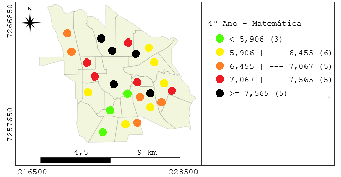
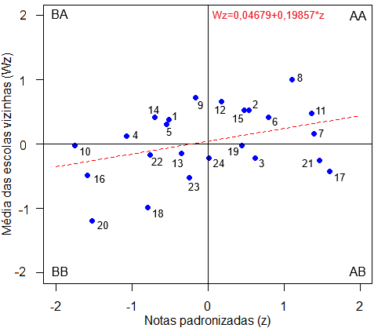
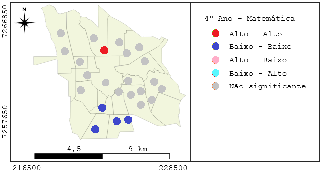
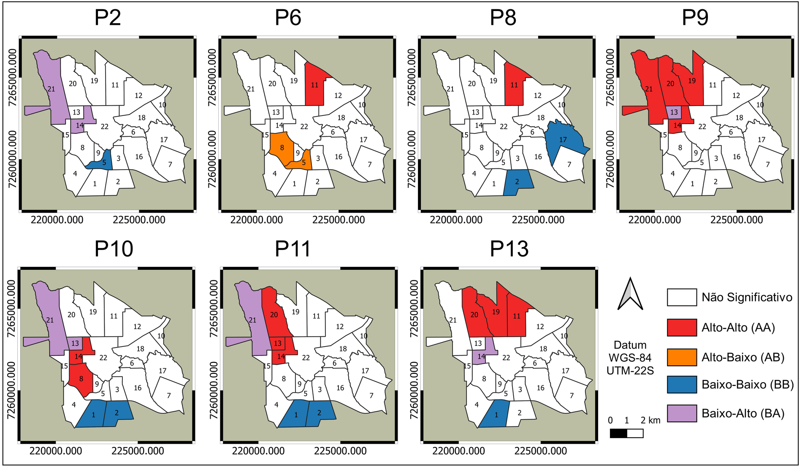
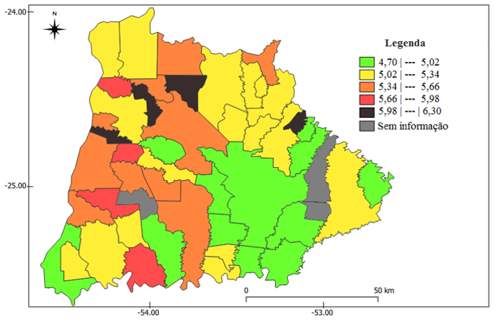
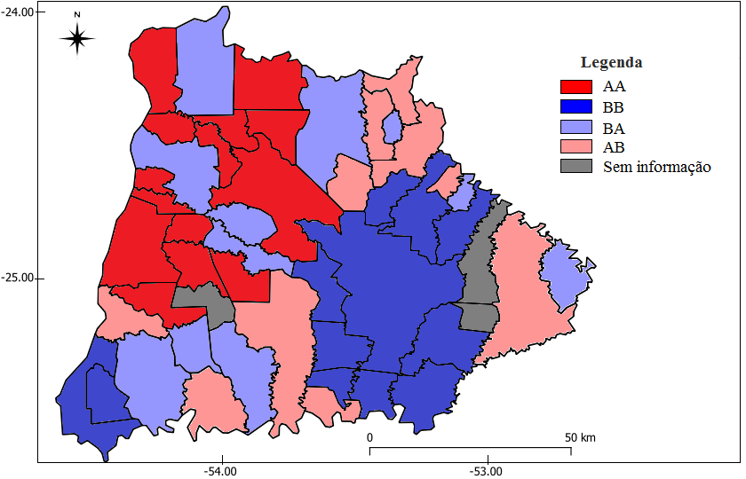

Do mapa à decisão
Quando a localização vira evidência. Estatística espacial, índice de Moran e LISA para enxergar padrões que o mapa comum esconde.
Transformar localização em conhecimento, e conhecimento em decisão
Dado, informação, conhecimento, decisão. Cada degrau pergunta não só o quê, mas onde, e o porquê de estar ali.
Tudo se relaciona com tudo, mas o que está perto se relaciona mais
Autocorrelação espacial: valores parecidos tendem a se agrupar. Positiva agrupa, negativa separa, ausente espalha ao acaso.
Três peças medem o padrão espacial
Define quem é vizinho de quem. Aqui, escolas a até 2300 metros uma da outra.
Mede a autocorrelação no mapa inteiro. Um número resume se há ou não padrão global.
Indicador local de associação espacial. Aponta onde, exatamente, estão os agrupamentos.
A matriz de pesos liga unidades próximas e ignora as distantes
Cada laço é uma relação de vizinhança. Sem essa rede, não há autocorrelação a medir.
Desempenho em matemática do 4º ano nas escolas municipais
24
escolas municipais
4º
ano do fundamental
% acertos
variável georreferenciada
UTM
coordenadas por Google Earth Pro
Toledo, oeste do Paraná, cerca de 150 mil habitantes e 1.198 km². Dados de notas cedidos pela Secretaria Municipal de Educação.
Cada escola, o percentual de acertos em matemática

Figura 2: distribuição do desempenho em matemática no 4º ano. Fonte: Dalposso, Merli e Neumann (2025), Revista Interritórios.
Quatro quadrantes: Alto-Alto, Baixo-Baixo, e os contrastes

Figura 4: diagrama de espalhamento de Moran. Fonte: Dalposso et al. (2025).
Índice I de Moran global
0,199
Leve autocorrelação espacial positiva. O eixo horizontal traz a nota padronizada, o vertical a média das escolas vizinhas.
Mapa de agrupamento LISA do desempenho escolar

Figura 7: mapa de agrupamento LISA. Fonte: Dalposso et al. (2025).
escolas em cluster Alto-Alto, alto desempenho cercado de alto, ao norte.
escolas em cluster Baixo-Baixo, concentradas na região sul.
escolas em contraste local, Alto-Baixo ou Baixo-Alto.
Distribuição espacial de casos de COVID-19 em Toledo

Análise LISA por bairro. Fonte: Garcia, Dalposso, Uribe Opazo e colaboradores (2024), Informe GEPEC.
A mesma estatística espacial que mapeia notas mapeia contágio. A ferramenta é geral, o que muda é a pergunta.
IDEB no oeste paranaense, do valor bruto ao cluster

Coroplético do IDEB por município.

Clusters LISA do IDEB.
Fonte: Amaral (2021), TCC em Licenciatura em Matemática, UTFPR Toledo.
O cluster não é ponto final, é onde a política começa
Os agrupamentos de baixo desempenho ao sul revelam desigualdade regional. Ver onde permite agir onde, com intervenção direcionada.
Notas, IDEB ou Contágio: onde os dados estão importam tanto quanto valem. Isso é inteligência geográfica.
Feito com Mira